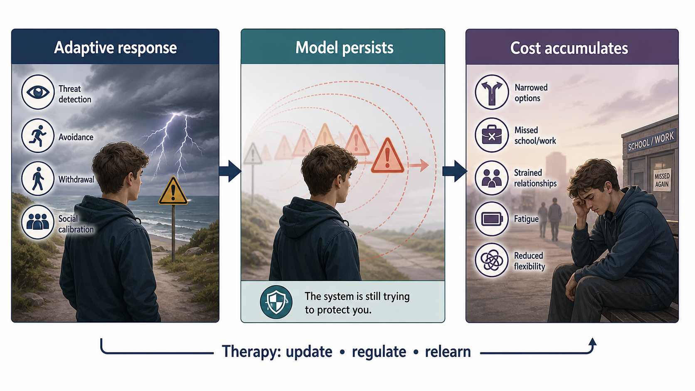
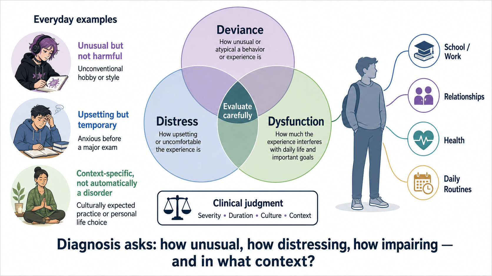
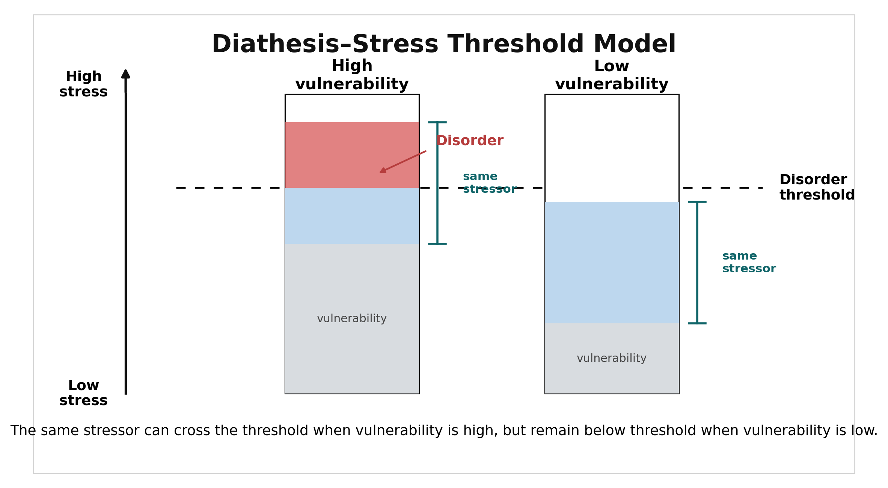
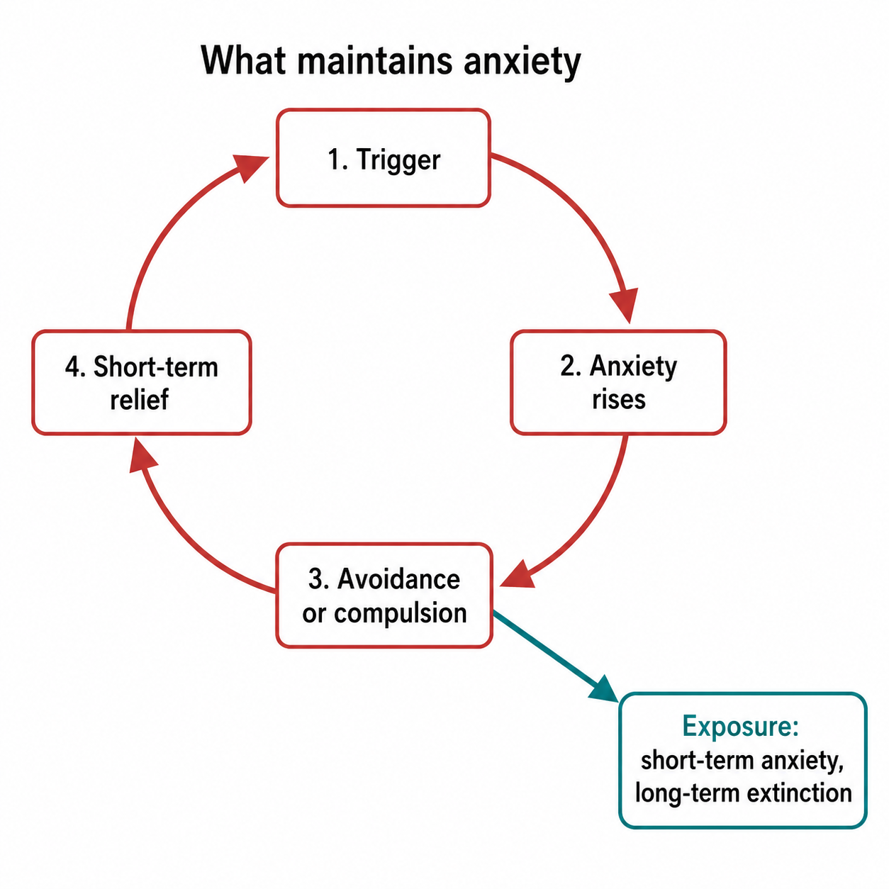
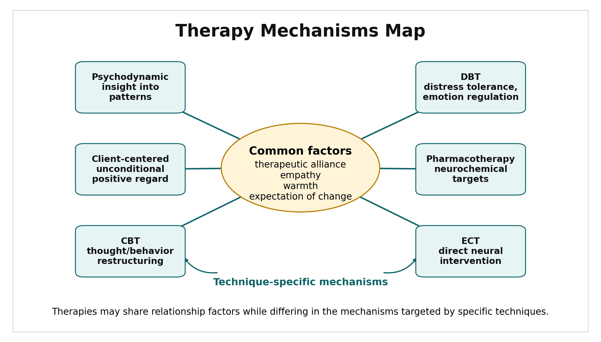
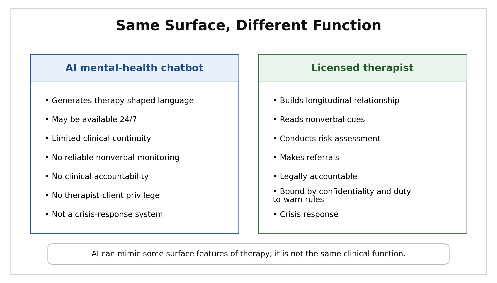

Psychological Disorders & Therapy
The word crazy does a lot of work in everyday language — and almost none of it maps onto how psychologists define or study psychological disorders. The folk intuition is that mental illness is obvious: you would recognize it if you saw it, it looks extreme, and it is categorically different from whatever you feel on a bad day. The research suggests otherwise on every count.
Approximately one in five adults in the United States meets criteria for a diagnosable psychological disorder at some point during a given year (SAMHSA, 2022). That is a 12-month figure, not a snapshot of this exact moment — many disorders are episodic, so it does not mean one in five people are symptomatic right now. But it does mean the person sitting next to you in lecture has a real, non-trivial chance of having already met criteria for something this year, or of developing something before it ends — and neither of you might know it. Most psychological disorders exist on a continuum with normal experience. The difference between clinical anxiety and ordinary worry is not the presence of a qualitatively different brain state. It is intensity, duration, and how much it disrupts life.
When psychologist David Rosenhan (1973) sent healthy volunteers to psychiatric hospitals complaining of hearing a voice that said "thud," all were admitted and diagnosed with schizophrenia. Once inside, they behaved completely normally. Staff never detected them; only other patients grew suspicious. The study became a landmark in the history of abnormal psychology — and, as we will see below, one whose own data have been seriously questioned. What it illustrates nonetheless remains real: diagnosis is not a simple process of detecting an obvious thing that is clearly present or absent. Understanding what psychological disorders actually are — and how we define, diagnose, and treat them — requires leaving the folk intuition behind.
Where This Fits
When does a protective model become costly? Every mechanism this book has covered so far — prediction, learning, memory, stress, social calibration — exists because it usually works. Disorders are not a separate category of human experience, a different kind of mind running on different rules. They are what happens when those same ordinary processes become self-sustaining, rigid, and costly: a threat model that keeps firing after the threat has passed, a mood system stuck defending against a danger that never fully resolves, a self-model too rigid to update. The model is usually still working — it is miscalibrated, overgeneralized, or stuck to an ecology that no longer applies. Therapy, in turn, works largely through the same mechanisms that build ordinary learning and memory in the first place — prediction error, reconsolidation, extinction — now aimed at revising a model that got stuck.
This does not mean every disorder is simply normal experience turned up louder. Some involve developmental differences, psychotic-spectrum states, or biological disruptions substantial enough to require clinical care in their own right, not just a dial turned too high. The point is narrower and still worth making: even these draw on recognizable psychological and biological mechanisms — this chapter is not describing a different kind of mind, just a wider range of what these ordinary mechanisms can produce.
This chapter draws on almost every chapter in this book. The biological bases of behavior (Chapter 3) underlie every disorder here — neural circuits, neurotransmitters, and genetic vulnerabilities shape risk. Learning principles (Chapter 7) explain how phobias develop and why exposure therapy works. Memory and cognition (Chapters 8–9) illuminate PTSD, depressive schemas, and the heuristic failures that affect clinical diagnosis. The personality system (Chapter 11) is continuous with personality disorders, not separate from them. And the therapeutic alliance — the relationship between therapist and client — is one of the most robustly replicated predictors of treatment outcome in all of psychology (Flückiger et al., 2018).

Learning Objectives
- Define psychological disorder using the 3D criteria and explain what the DSM-5-TR does and does not claim.
- Describe the diathesis-stress model and biopsychosocial framework for understanding disorder.
- Distinguish the major anxiety disorders by their focus of fear or worry.
- Compare major depressive disorder, persistent depressive disorder, and bipolar disorder.
- Describe the positive and negative symptoms of schizophrenia and evaluate the dopamine hypothesis.
- Identify the three clusters of personality disorders and describe ASPD and BPD in more depth.
- Distinguish ADHD and autism spectrum disorder as neurodevelopmental conditions.
- Compare psychological therapies (psychoanalytic, humanistic, CBT) and evaluate the evidence for drug therapies and ECT.
Section 1: Defining and Diagnosing Psychological Disorders
The 3D Criteria
Ask students to generate examples of psychological disorders and they quickly reach for dramatic cases: someone who hears voices, believes they are being followed, or cannot leave their home. These are real disorders — but they leave out the quietly suffering graduate student who hasn't slept properly in four months, the teenager whose checking rituals consume two hours of every morning, and the person who has felt mildly but persistently low for three years and can no longer remember feeling otherwise.
Psychology uses three overlapping criteria to define psychological disorder, sometimes called the 3D criteria:
- Deviant: The behavior or experience departs markedly from cultural norms. But deviance alone is not sufficient — nonconformity and eccentricity are not disorders.
- Distressing: The person experiences significant personal suffering. Note that some disorders (notably antisocial personality disorder) cause far more distress to others than to the person diagnosed.
- Dysfunctional: The pattern impairs functioning in social, occupational, or other important domains.
Clinicians apply all three and exercise judgment about degree. Psychological disorders are not binary — present or absent — but points on a continuum. What tips a pattern of worry into generalized anxiety disorder, or sadness into major depressive disorder, is severity, duration, and impairment, not a qualitatively different underlying state.

The DSM-5-TR
The Diagnostic and Statistical Manual of Mental Disorders, Fifth Edition with text revision (DSM-5-TR; American Psychiatric Association, 2022), is the primary diagnostic classification system used in the United States. It provides standardized criteria for each disorder: a list of symptoms, duration requirements, and exclusion criteria. A common misconception is that the DSM identifies the cause of disorders. It does not. It describes clusters of symptoms that tend to co-occur. The DSM is categorical — you either meet criteria or you don't — but the underlying conditions it describes are often dimensional. Many people meet criteria for more than one disorder, which makes sense if disorders share underlying mechanisms.
The DSM is not static. Homosexuality was classified as a disorder until 1973. PTSD did not appear until 1980. Neither change happened in a vacuum: they reflect a mix of new research, clinical debate within the field, and — especially in the 1973 case — sustained social and political pressure, including organized activism that directly confronted the profession's own leadership. The DSM is a living document, revised through evidence, argument, and the social context in which psychiatry operates, not a fixed inventory of natural kinds.

The Diathesis-Stress Model
No single factor determines whether someone develops a psychological disorder. The diathesis-stress model proposes that a person inherits or develops a vulnerability (diathesis) — genetic, neurological, or psychological — and that environmental stressors interact with that vulnerability to trigger disorder. The same stressor produces different outcomes in different people because their diatheses differ. The same diathesis can remain latent without sufficient stress.

The biopsychosocial model adds social context explicitly: biological vulnerabilities, psychological factors (cognition, coping style, learning history), and social determinants (poverty, trauma, social support, stigma) all contribute simultaneously, not as competing explanations.
One specific social mechanism is worth naming directly: the just-world hypothesis — the belief that the world is basically fair, so people generally get what they deserve (Lerner, 1980). Applied to mental illness, this generates victim-blaming ("they must have brought this on themselves") and self-stigma, when a person applies that same reasoning to themselves. This is a social-psychology mechanism, not a clinical one (Chapter 11) — but it is one of the primary routes by which stigma toward psychological disorders is generated and sustained, and it shapes whether people seek treatment at all.
Read this one carefully. The Rosenhan study is one of the most cited in the history of abnormal psychology — and one of the most contested. Before looking at what it found, it is worth knowing that journalist Susannah Cahalan spent years investigating the study for her 2019 book The Great Pretender and found serious problems: Rosenhan's own unpublished notes contained discrepancies between his written accounts and what the records showed, and the identities and experiences of several described pseudopatients could not be independently verified. The study cannot be treated as clean experimental evidence. It is presented here because it shaped the field, influenced the DSM-III revision, and remains a useful frame — but reading it critically is the point, not incidental to it.
Background. In the early 1970s, psychiatric diagnosis was often criticized as unreliable and as reflecting social control as much as clinical assessment. David Rosenhan designed a study to test whether psychiatric hospitals could distinguish genuine patients from pseudopatients — healthy people presenting fabricated symptoms.
Method. Eight pseudopatients, including Rosenhan himself, presented at various hospitals and reported hearing a voice that said "empty," "hollow," and "thud." No other false information was given. After admission, they behaved completely normally and reported feeling fine.
Results. All eight were admitted. All but one were diagnosed with schizophrenia. Staff never detected the pseudopatients; other patients sometimes did. Once the diagnostic label was applied, normal behaviors were reinterpreted accordingly: pseudopatients who took notes had "note-writing behavior" logged in their charts. Average hospitalization was 19 days.
Rosenhan's interpretation. He concluded that it is impossible to distinguish the sane from the insane in psychiatric settings — that a diagnostic label, once attached, structures all subsequent perception of the person's behavior. The study contributed directly to the tightening of diagnostic criteria in DSM-III (1980).
The better-evidenced version of the same point. Temerlin (1968) ran a cleaner test: clinicians listened to a recorded interview of a demonstrably healthy man, but a confederate authority figure briefly mentioned beforehand that the man "sounded neurotic." Diagnosis rates shifted substantially. This is the same anchoring mechanism from Chapter 9, now in a clinical context — and it does not rest on disputed field notes. Rosenhan's study made the argument famous; Temerlin's gives it a more defensible empirical foundation.
Section 2: Anxiety, Mood, and Psychotic Disorders
Anxiety Disorders
A useful distinction: fear is a response to a threat that exists right now — your heart rate spikes because a snake is approaching. Anxiety is a response to a threat that might happen — worry, apprehension, dread of something not yet present. Most anxiety disorders involve anxiety more than fear, though panic disorder involves acute, fear-like episodes.
Generalized Anxiety Disorder (GAD) is characterized by persistent, excessive worry across multiple domains — work, health, family, finances — that the person finds difficult to control, accompanied by physical symptoms (muscle tension, fatigue, sleep disruption). The worry is disproportionate to the actual probability or impact of the feared events.
Specific phobia involves intense fear of a particular object or situation (heights, spiders, blood, flying) that is out of proportion to actual danger, recognized by the person as excessive, and that leads to avoidance. Phobias develop through classical conditioning (the feared stimulus was paired with a genuinely aversive experience) and are maintained through negative reinforcement: avoidance immediately reduces anxiety, which reinforces the avoidance, which prevents extinction (Chapter 7).
Social anxiety disorder involves intense fear of social situations where one might be scrutinized or humiliated. It is distinct from shyness: it causes significant functional impairment and typically leads to avoidance of professional and social opportunities.
Panic disorder involves recurrent unexpected panic attacks — sudden surges of intense fear with physical symptoms (racing heart, chest tightness, shortness of breath, dizziness) — accompanied by persistent worry about future attacks or behavioral changes designed to prevent them.
Obsessive-Compulsive Disorder (OCD), now in its own DSM chapter, involves intrusive, unwanted obsessions (recurrent thoughts, urges, or images) and compulsions (repetitive behaviors or mental acts performed to reduce the anxiety the obsessions generate). The compulsions provide short-term relief but maintain the disorder by preventing habituation to the anxiety.

Post-Traumatic Stress Disorder (PTSD), now in the Trauma- and Stressor-Related Disorders chapter of the DSM, involves intrusion symptoms (flashbacks, nightmares), avoidance of trauma-related cues, negative alterations in cognition and mood, and hyperarousal, following exposure to actual or threatened death, serious injury, or sexual violence. Not everyone exposed to trauma develops PTSD — biological diathesis, severity of the trauma, and social support all moderate the response.
Why do traumatic memories intrude as though the event is happening now, rather than being remembered as something past? Ordinary episodic memories get contextualized — tagged with when and where — a process that depends on the hippocampus (Chapter 8). Extreme threat arousal (high cortisol, amygdala dominance) disrupts that contextualizing function while the trauma is happening. Brewin, Dalgleish, and Joseph's (1996) dual representation theory frames the result as two memory systems out of sync: a vivid, poorly contextualized sensory trace — why flashbacks feel present-tense rather than remembered — alongside a comparatively thin verbal narrative of what happened. The threat response also widens the net of what counts as dangerous, a generalization that is adaptive immediately after a real threat but maladaptive once it persists into a safer, changed environment.
This creates a genuine bind: revising the memory — recontextualizing it as past and safe to think about — requires prefrontal function that the threat response itself suppresses. The moment the memory is most active is the moment the person is least equipped to process it.
Trauma treatments are thought to work by getting the person to revisit the memory under conditions of safety, in a state where the prefrontal system can actually do its job — but exactly which mechanism does the updating is still an open question, not a settled one. Standard exposure therapy (Chapter 7) is most often explained through extinction: repeated safe exposure builds a new, competing association that inhibits the original fear response without erasing it. Nader, Schafe, and LeDoux (2000) demonstrated a second, distinct possibility — a consolidated memory, once retrieved, briefly becomes labile again before restabilizing, opening a window in which the original trace itself could be updated rather than just re-stored unchanged. This reconsolidation window is one proposed account of how treatments like EMDR work (Chen et al., 2014), but it is a candidate mechanism, not an established replacement for extinction — the two may operate together, or apply more to some treatments than others. Either way, the clinical target is the same: get the memory active enough to revise, paired with a signal of safety, while the threat response isn't in full control.
Mood Disorders
Major Depressive Disorder (MDD) requires at least five of nine symptoms — including depressed mood or loss of interest/pleasure (anhedonia) — for at least two weeks, with significant impairment. Other symptoms include changes in appetite and sleep, fatigue, difficulty concentrating, feelings of worthlessness, and recurrent thoughts of death or suicidal ideation.

Aaron Beck's cognitive triad of depression identifies three negative schemas: views of the self (I am worthless), the world (nothing ever goes right), and the future (it will always be this way). These schemas filter incoming information to confirm the negative view — confirmation bias applied to self-evaluation (Chapter 9). Abramson, Seligman, and Teasdale (1978) extended this with a depressogenic attributional style: depressed individuals tend to attribute negative events to internal, stable, and global causes.
The older "chemical imbalance" explanation — low serotonin causes depression — does not hold up under scrutiny. A 2022 umbrella review by Moncrieff and colleagues found no consistent evidence for reduced serotonin levels or activity in depression. This does not mean SSRIs are ineffective — the evidence for their efficacy is real — but it means we do not understand their mechanism as well as the popular story implied (Cipriani et al., 2018). Depression almost certainly involves HPA axis dysregulation, inflammatory processes, disrupted sleep, and circuit-level changes in prefrontal-limbic regulation.
The Sapolsky/dopamine framing from Chapter 7 extends here: anhedonia in depression may reflect disrupted reward prediction error signaling. When dopamine anticipation signals fail — when nothing seems worth pursuing in advance — the motivational pull to initiate behavior collapses. This connects the phenomenology of depression (nothing seems worth doing) to disrupted dopaminergic anticipation circuitry in a way a serotonin story alone cannot.
A third mechanism reframes anhedonia and withdrawal themselves. The behavioral profile of depression — withdrawal, fatigue, reduced appetite, loss of pleasure — is also the behavioral profile of an animal fighting an infection. Hart (1988) proposed that this "sickness behavior" is an evolved, centrally organized program that conserves energy for immune defense, not a breakdown. The same inflammatory cytokines that produce it during infection also produce depression-like states in humans when administered directly, and chronic low-grade inflammation predicts later depression onset (Dantzer & Kelley, 2007). This is not the whole story — it is one contributing mechanism, clearest in a subset of cases — but it reframes depression's profile as an ancient defensive program firing in response to chronic psychosocial stress rather than infection.
Persistent Depressive Disorder (PDD), formerly dysthymia, involves chronically depressed mood lasting at least two years that does not meet full MDD criteria. People with PDD often describe the low mood as simply how they are — they have no memory of feeling otherwise.
Bipolar Disorder involves episodes of both depression and mania. Bipolar I requires at least one full manic episode: a period of abnormally elevated or irritable mood with increased energy, decreased need for sleep, grandiosity, racing thoughts, distractibility, and impulsive risk-taking, lasting at least one week and causing marked functional impairment. Bipolar II involves hypomanic episodes (less severe, no psychosis or hospitalization required) and depressive episodes. Bipolar disorder is substantially heritable; first-degree relatives of individuals with bipolar I have roughly a 10-fold increased risk compared to the general population (Craddock & Sklar, 2013).
Schizophrenia
Schizophrenia has a lifetime prevalence of approximately 1% worldwide. Symptoms divide into two categories:
Positive symptoms are excesses — experiences added on top of normal functioning:
- Hallucinations: perceptual experiences without an external stimulus; most commonly auditory (hearing voices others do not hear)
- Delusions: fixed, false beliefs held with conviction despite disconfirming evidence — persecutory, grandiose, or referential
- Disorganized thinking: loose associations, tangential speech, incoherence
- Disorganized or catatonic behavior
Negative symptoms are deficits — reductions in normal functioning:
- Flat affect: reduced emotional expressivity
- Alogia: diminished speech output
- Avolition: reduced goal-directed motivation
- Anhedonia: reduced capacity for pleasure
Positive symptoms are more responsive to antipsychotic medication; negative symptoms are harder to treat and more strongly predict long-term functional outcome.

The dopamine hypothesis proposes that excess dopaminergic activity in mesolimbic pathways underlies positive symptoms. Evidence: drugs that block D2 receptors reduce positive symptoms; drugs that increase dopamine (amphetamines, cocaine) can induce psychosis-like states in healthy individuals; antipsychotic drug potency correlates directly with D2 receptor affinity (Seeman et al., 1976). The hypothesis has been refined: reduced dopaminergic activity in the prefrontal cortex likely contributes to negative symptoms and cognitive deficits, alongside excess mesolimbic activity. Glutamate, particularly at NMDA receptors, is also implicated — the original hypothesis is almost certainly too simple.
Schizophrenia is substantially heritable: concordance in identical twins is approximately 40–65%, indicating both strong genetic contributions and meaningful environmental influence (Cardno & Gottesman, 2000).
Section 3: Personality Disorders and Neurodevelopmental Disorders
Personality Disorders
Chapter 11 covered trait consistency and the person-situation debate. Personality disorders sit at an extreme of that continuum: they represent patterns of inner experience and behavior that deviate markedly from cultural expectations, are pervasive and inflexible, cause significant distress or impairment, and are stable from adolescence or early adulthood onward. The DSM-5-TR organizes them into three clusters:
Cluster A ("odd or eccentric"): paranoid, schizoid, and schizotypal. Individuals with schizotypal PD show sub-psychotic versions of the cognitive and perceptual distortions seen in schizophrenia — odd beliefs, ideas of reference, unusual perceptual experiences — without crossing the threshold for a full psychotic episode.
Cluster B ("dramatic, emotional, or erratic"): antisocial, borderline, histrionic, and narcissistic.
Antisocial Personality Disorder (ASPD) is a pervasive pattern of disregard for and violation of others' rights: repeated law-breaking, deceitfulness, impulsivity, aggression, recklessness, and lack of remorse. Recall from Chapter 3 that Phineas Gage's damage to the ventromedial prefrontal cortex — the region that integrates emotional signals into decision-making — produced a personality shift that resembles this pattern in several respects. ASPD has a significant genetic component and is related to but not identical with psychopathy, a construct defined by Cleckley (1941) and operationalized in the Hare Psychopathy Checklist-Revised (PCL-R; Hare, 1991). Psychopathy emphasizes callousness and shallow affect; not everyone with ASPD scores high on psychopathy measures, and not all high-PCL-R individuals are diagnosed with ASPD.
Do Not Confuse: ASPD ≠ antisocial behavior ≠ psychopathy ≠ legal insanity. ASPD is a clinical diagnosis requiring a pervasive pattern and evidence of conduct problems before age 15. Not all people with ASPD engage in criminal behavior; most people who engage in criminal behavior do not have ASPD. Psychopathy is a personality construct measured by the PCL-R, not a DSM category. Legal insanity is a legal standard — whether the person knew their act was wrong — and is rarely applied even in severe psychosis.
Borderline Personality Disorder (BPD) involves instability in relationships, self-image, and affect, alongside marked impulsivity: frantic efforts to avoid abandonment, identity disturbance, recurrent suicidal behavior or self-harm, intense and unstable mood, and chronic feelings of emptiness. Marsha Linehan, who developed Dialectical Behavior Therapy specifically for BPD, proposed a biosocial theory: high innate emotional sensitivity combined with an invalidating environment — one that repeatedly communicates the person's emotional responses are wrong or excessive — produces the disorder (Linehan, 1993).
Cluster C ("anxious or fearful"): avoidant, dependent, and obsessive-compulsive. These involve chronic anxiety, fear of rejection, and rigidity.
Neurodevelopmental Disorders
Neurodevelopmental disorders have onset in the developmental period and involve impairments present early in life, though they may not be formally diagnosed until later.
Attention-Deficit/Hyperactivity Disorder (ADHD) is characterized by persistent inattention, hyperactivity-impulsivity, or both, that interfere with functioning. The inattentive presentation involves difficulty sustaining attention, poor organization, and distractibility. The hyperactive-impulsive presentation involves fidgeting, inability to remain seated, excessive talking, and difficulty waiting. The combined presentation involves both. ADHD affects approximately 5–8% of children; many continue to meet criteria into adulthood, typically with reduced hyperactivity but persistent inattention.
ADHD involves impaired prefrontal executive function — the system that regulates attention, inhibition, and working memory (Chapter 3). The Sapolsky/dopamine connection applies here: dopaminergic circuitry supporting goal-directed behavior and sustained effort appears underactive in ADHD. Stimulant medications (methylphenidate, amphetamine salts) increase dopamine and norepinephrine in prefrontal circuits, improving signal-to-noise for goal-directed attention.
Autism Spectrum Disorder (ASD) is characterized by persistent deficits in social communication and social interaction across multiple contexts, alongside restricted, repetitive patterns of behavior, interests, or activities. "Spectrum" is accurate: individuals with ASD vary enormously in intellectual ability, language, and support needs. The core social-communication features include difficulty with the implicit conventions of social interaction and limited understanding of others' mental states — connecting directly to the Theory of Mind findings from Chapter 10 (Baron-Cohen, Leslie, & Frith, 1985).
As flagged in Chapter 7: the popular "broken mirror neuron theory of autism" — which proposed that ASD reflects mirror neuron system dysfunction — is not well supported by current evidence. The well-documented finding is difficulty with Theory of Mind tasks. The mechanistic explanation remains contested.
The origins of ASD appear to lie in prenatal brain development rather than postnatal experience. Postmortem tissue studies have found focal patches of disrupted cortical laminar architecture in prefrontal and temporal regions of individuals with ASD — an organizational failure that can only have occurred during the second trimester, when cortical layers are being established (Stoner et al., 2014). Consistent with this, children later diagnosed with ASD show accelerated brain overgrowth in the first year of life, before behavioral symptoms are detectable (Hazlett et al., 2017). At the synaptic level, Tang et al. (2014) found that cortical neurons in ASD postmortem tissue had significantly more synapses than age-matched controls, suggesting impaired synaptic pruning — the process by which microglia eliminate excess connections during development (Chapter 3). Many of the most replicated ASD-associated genetic variants affect proteins in the synaptic scaffolding families (SHANK, NRXN, NLGN) that regulate synapse formation and stability. Fetal active sleep — the in-utero precursor to REM — generates the spontaneous neural activity thought to drive activity-dependent synaptogenesis and circuit refinement; research on neonatal active sleep suggests that disruptions to this system during prenatal development may contribute to the synaptic excess observed in ASD (Blumberg, 2010). This is an active area of investigation, and the full causal chain from prenatal disruption to the specific behavioral profile of ASD remains to be worked out.
Section 4: Psychological and Biological Treatments
The psychotherapy literature contains a puzzle: hundreds of different therapeutic approaches exist, but when researchers compare them in controlled trials, most produce roughly similar outcomes for most disorders — a result sometimes called the Dodo Bird Verdict (Luborsky, Singer, & Luborsky, 1975), after Alice's declaration that "all have won and all must have prizes." The strongest predictor of outcome across approaches is not the specific technique the therapist uses but the quality of the therapeutic alliance — the collaborative, trusting relationship between therapist and client (Flückiger et al., 2018).
This does not mean technique is irrelevant. For specific disorders — particularly anxiety disorders — particular approaches show distinctly better outcomes. The overall picture: common factors (alliance, empathy, warmth) account for a large portion of effectiveness across disorders; specific techniques matter most for specific conditions.

Psychoanalytic and Psychodynamic Therapies
Classical psychoanalysis, developed by Freud, rests on the premise that psychological symptoms reflect unconscious conflicts, typically rooted in childhood experience. Technique involves free association (saying whatever comes to mind without censorship), dream analysis, working through resistance (unconscious avoidance of threatening material), and transference (the client's displacement of feelings from earlier relationships onto the therapist).
Modern psychodynamic therapy is briefer and more structured. It retains the focus on unconscious patterns and the therapeutic relationship as a vehicle for insight. Meta-analytic evidence suggests psychodynamic therapy produces outcomes comparable to other approaches for mood disorders and complex interpersonal problems (Shedler, 2010), though whether insight-based resolution of repressed conflict is the active mechanism is contested.
Humanistic and Client-Centered Therapy
Carl Rogers argued that people possess a natural drive toward growth that is blocked when they receive conditional rather than unconditional positive regard — when they learn that others' acceptance is contingent on being a particular way (Chapter 11). Client-centered therapy removes the evaluative dynamic: the therapist provides unconditional positive regard, empathy (genuine understanding of the client's inner world), and congruence (authenticity — no professional facade).
In this environment, Rogers argued, clients can explore and accept aspects of themselves they previously denied, moving toward greater congruence between their actual and ideal self. The therapist is non-directive: rather than interpreting or advising, they reflect what they hear, helping the client clarify their own experience.
Empirical support for the specific mechanism Rogers proposed is modest — non-directiveness is not consistently superior to more directive approaches for specific conditions. What is robustly supported is that the core conditions Rogers identified (empathy, warmth, genuineness) are strong predictors of alliance quality, which in turn predicts outcome across all therapy types (Rogers, 1957; Flückiger et al., 2018).
Sourcing note for DIS-009: see chapter header.
Cognitive-Behavioral Therapy
Cognitive-Behavioral Therapy (CBT) integrates cognitive and behavioral approaches under the premise that thoughts, behaviors, and emotions mutually influence each other — and that changing any one produces change in the others.
Aaron Beck developed cognitive therapy originally for depression (Beck, Rush, Shaw, & Emery, 1979): the therapist helps clients identify automatic negative thoughts, examine the evidence for and against them, and develop more balanced alternatives (cognitive restructuring). Albert Ellis developed Rational Emotive Behavior Therapy (REBT), targeting irrational absolute demands ("I must be approved of by everyone") and catastrophizing ("it would be awful if I failed") (Ellis, 1962).
Behavioral components are powerful in their own right. Behavioral activation for depression involves scheduling rewarding activities to break the cycle of withdrawal and low mood. Exposure therapy for anxiety involves graduated contact with feared stimuli without the feared consequence, allowing extinction of the conditioned fear response (Chapter 7). Exposure and Response Prevention (ERP) for OCD exposes clients to obsessive triggers while preventing the compulsive response, allowing anxiety to rise and naturally subside.
CBT has the strongest empirical evidence base of any psychological treatment for depression, anxiety disorders, OCD, PTSD, eating disorders, and insomnia, with moderate-to-large effect sizes and outcomes that typically maintain after treatment ends (Hofmann et al., 2012).
Dialectical Behavior Therapy (DBT), developed by Linehan (1993) for BPD, adds acceptance-based and mindfulness-based components to CBT. The "dialectic" is the tension between change (the behavior is problematic) and acceptance (the client is doing the best they can given their history). DBT includes skills training in mindfulness, distress tolerance, emotion regulation, and interpersonal effectiveness.
Biological Treatments
Drug therapies operate on neurotransmitter systems to reduce symptoms.
Antidepressants. Selective serotonin reuptake inhibitors (SSRIs) — fluoxetine, sertraline, escitalopram — block serotonin reuptake, increasing synaptic serotonin availability. They are the most commonly prescribed first-line treatment for depression and many anxiety disorders. As noted in Section 2, the serotonin-deficiency theory of depression is not supported by current evidence; we have an effective treatment whose mechanism we do not fully understand. Effect sizes are real but modest, and substantially larger for severe depression than mild depression (Cipriani et al., 2018). SNRIs act on both serotonin and norepinephrine. Older classes — MAOIs and tricyclics — are effective for some patients but carry more significant side effects and drug interactions.
Antipsychotics. First-generation (typical) antipsychotics (haloperidol, chlorpromazine) block D2 receptors and reduce positive symptoms of schizophrenia but can produce serious movement side effects (tardive dyskinesia). Second-generation (atypical) antipsychotics (clozapine, risperidone, quetiapine) act on both dopamine and serotonin receptors, have fewer movement side effects, and show somewhat better efficacy for negative symptoms. Clozapine carries a risk of agranulocytosis requiring regular blood monitoring.
Mood stabilizers. Lithium has been used for bipolar disorder since the 1950s and remains a first-line treatment for reducing the frequency and severity of manic episodes. Its mechanism is not fully understood. Regular blood level monitoring is required because the therapeutic window is narrow.
Anxiolytics. Benzodiazepines (diazepam, alprazolam) enhance GABA-mediated inhibition, producing rapid relief of acute anxiety. They are effective for short-term use but carry significant risks of tolerance, dependence, and — critically — dangerous respiratory depression in combination with opioids or alcohol (Chapter 5). Evidence-based treatment for anxiety disorders uses SSRIs or SNRIs combined with CBT, not long-term benzodiazepine maintenance.
Electroconvulsive Therapy (ECT) is one of the most misrepresented treatments in all of medicine. The cultural image — from Ken Kesey's One Flew Over the Cuckoo's Nest — involves a patient being shocked awake while conscious and convulsing against their will. Modern ECT looks nothing like this: it is administered under general anesthesia with muscle relaxants; the patient feels nothing; the electrical event occurs in the brain without visible convulsion. Brief electrical stimulation is applied to the scalp, inducing a controlled seizure of approximately 30–60 seconds.
ECT is used primarily for severe, treatment-resistant MDD — cases in which multiple medication trials have failed and the patient's condition is life-threatening. For this indication, it is among the most effective treatments available, with response rates substantially better than further pharmacotherapy alone; real ECT significantly outperforms both simulated ECT and medication in controlled trials (Geddes et al., 2003). The mechanism is unknown. The primary side effect is temporary memory disruption — typically short-term memory for events around the time of treatment — which resolves for most patients.
The parallel. AI tools are increasingly applied in mental health contexts: chatbots for psychoeducation and support, symptom-pattern flagging systems, natural language processing of clinical notes. These applications borrow directly from clinical psychology — diagnostic reasoning, empathic responsiveness, cognitive restructuring. The parallels are real enough to be instructive about both AI's capabilities and psychology's actual mechanisms.

Diagnostic reasoning. The same heuristic failures that affect human clinicians affect AI diagnostic tools. Anchoring — premature commitment to an initial diagnostic hypothesis — occurs when systems trained on symptom-label pairs learn to weight early input heavily. Premature closure — stopping the diagnostic search once a plausible explanation is found — follows. These are the heuristics from Chapter 9 operating at scale. An AI diagnostic tool is running something like System 1 inference over high-dimensional inputs; it is not immune to the biases that characterize fast thinking.
Confidentiality and data handling. Therapists operate under strict legal obligations: protected health information (PHI) under HIPAA cannot be disclosed without consent. When a client enters symptoms, experiences, or diagnoses into an AI system — a chatbot, a mental health app, a general-purpose assistant — the legal protections around that information depend entirely on the platform and its data use policies, which vary widely. The clinical concern is that users may share sensitive clinical information with AI tools without understanding that this information is not protected the way therapist-disclosed information is. What counts as PHI, and who is covered by HIPAA, are questions worth raising explicitly with students who may already be using AI systems for emotional support.
Emotional contagion and AI sentiment mirroring. AI systems trained on text that includes distress, crisis, and self-harm content may mirror that distress rather than contain it. This is not empathy — it is pattern completion. A model learns that distress cues are typically followed by commiserating language because that is what the training data shows. A trained therapist provides empathic presence with affect regulation; they receive the client's distress without being dysregulated by it, and that regulated responsiveness is part of what is therapeutically useful. A language model produces empathy-shaped text with no internal state at all. In a user experiencing acute distress, responses that amplify rather than contain may carry real clinical risk.
What AI cannot do: cognitive restructuring. CBT's cognitive restructuring requires several things a language model does not have: a client who holds beliefs (not merely produces text consistent with beliefs), an affective investment in those beliefs (the feeling of being worthless, not just the proposition), a capacity to experience relief when a belief is revised, and a therapist who notices what the client is not saying, monitors nonverbal cues, and calibrates when to challenge and when to wait. AI produces restructuring-shaped language. It can generate the surface form of a Socratic dialogue. It cannot do what the dialogue is designed to do, because the mechanism — a question aimed at a believing, feeling person who will notice the dissonance between the question and their schema — requires a behaving organism with beliefs and affect.
What the breakdown tells us. These limitations are not merely technical gaps that better models will close. They reflect what psychotherapy actually is: a relationship in which change is mediated by the client's emotional engagement, the developing alliance, and the client's capacity to internalize new ways of relating to their own experience. A system that produces the output of a therapeutic interaction without any of the underlying mechanisms is not doing therapy. Students should know this — not to dismiss AI as a tool for psychoeducation, access to information, or self-monitoring — but because treating it as a substitute for human therapeutic relationship carries risks that the surface appearance of the interaction does not reveal.
Chapter Summary
Psychological disorders are defined by the 3D criteria — deviance, distress, and dysfunction — and classified by the DSM-5-TR, which describes symptom clusters without specifying causes. The diathesis-stress model frames disorders as arising from pre-existing vulnerabilities interacting with environmental stressors; the biopsychosocial model situates those vulnerabilities in biological, psychological, and social context simultaneously.
Anxiety disorders involve excessive fear or worry: phobias and OCD are maintained by avoidance and compulsive behavior; GAD involves generalized worry; panic disorder involves recurrent unexpected panic attacks; PTSD follows traumatic exposure. Major depressive disorder involves pervasive depressed mood or anhedonia, shaped by Beck's cognitive triad and disrupted dopaminergic anticipation circuitry. The serotonin-deficiency model is not well supported. Bipolar disorder involves cycles of mania and depression with substantial genetic loading. Schizophrenia involves positive symptoms (hallucinations, delusions) and negative symptoms (flat affect, avolition), with the dopamine hypothesis probably capturing part of a more complex picture.
Personality disorders represent inflexible trait patterns; ASPD and BPD are most clinically significant in Cluster B. Neurodevelopmental disorders, including ADHD (dopaminergic executive function deficit) and ASD (social communication and Theory of Mind deficits), have onset in the developmental period.
Psychological treatments include psychodynamic therapy (insight and relational patterns), client-centered therapy (unconditional positive regard, empathy, congruence), and CBT — the most empirically supported approach, with specific evidence for anxiety, depression, OCD, and PTSD; DBT extends CBT for BPD. Biological treatments include SSRIs and other antidepressants (effective, mechanism partly unknown), antipsychotics (positive symptoms of schizophrenia), lithium (bipolar disorder), and ECT — an effective, often misunderstood treatment for severe treatment-resistant MDD. The therapeutic alliance is the most robust predictor of outcome across all forms of psychotherapy.
A pattern recurs across most of the disorders in this chapter: an ordinarily adaptive process — threat detection, mood regulation, memory consolidation, social calibration — becomes rigid, overgeneralized, or stuck to conditions that no longer apply, and treatment works largely by helping that same system revise rather than replacing it with something else. This does not describe every condition in this chapter equally well — psychotic-spectrum and neurodevelopmental disorders involve more than a dial turned up on a normal process — but even there, the underlying mechanisms are recognizably psychological and biological, not evidence of a categorically different kind of mind.
Key Terms
- 3D criteria
- Deviance, distress, and dysfunction: the three overlapping criteria used to define psychological disorder
- DSM-5-TR
- *Diagnostic and Statistical Manual of Mental Disorders*, Fifth Edition, Text Revision; the primary diagnostic classification system in the U.S.
- Diathesis-stress model
- Framework proposing that disorder arises from the interaction of a pre-existing vulnerability (diathesis) with environmental stressors
- Biopsychosocial model
- Framework attributing disorder to simultaneous biological, psychological, and social factors
- Generalized Anxiety Disorder (GAD)
- Persistent, excessive, difficult-to-control worry across multiple domains
- Panic disorder
- Recurrent unexpected panic attacks with persistent concern about future attacks
- Major Depressive Disorder (MDD)
- Syndrome involving depressed mood or anhedonia with associated cognitive, somatic, and motivational symptoms for at least two weeks
- Cognitive triad
- Beck's model of depression: negative schemas about the self, world, and future
- Anhedonia
- Reduced capacity to experience pleasure; a core symptom of depression and schizophrenia
- Bipolar I disorder
- Mood disorder involving at least one full manic episode
- Schizophrenia
- Psychotic disorder with positive symptoms (hallucinations, delusions, disorganized behavior) and negative symptoms (flat affect, alogia, avolition)
- Antisocial Personality Disorder (ASPD)
- Pervasive pattern of disregard for others' rights, deceitfulness, impulsivity, and lack of remorse
- Borderline Personality Disorder (BPD)
- Pattern of unstable relationships, self-image, and affect with marked impulsivity
- ADHD
- Neurodevelopmental disorder characterized by persistent inattention, hyperactivity-impulsivity, or both
- Autism Spectrum Disorder (ASD)
- Neurodevelopmental disorder with deficits in social communication and restricted, repetitive behaviors
- Cognitive restructuring
- CBT technique of identifying, examining, and revising automatic negative thoughts
- Exposure therapy
- Behavioral technique involving graduated contact with feared stimuli to permit extinction of conditioned fear
- Dialectical Behavior Therapy (DBT)
- CBT variant for BPD integrating change-oriented and acceptance-based skills
- Therapeutic alliance
- The collaborative, trusting relationship between therapist and client; the strongest cross-therapy predictor of outcome
- Electroconvulsive therapy (ECT)
- Biological treatment for severe, treatment-resistant MDD involving brief electrical stimulation of the brain under general anesthesia
- Dopamine hypothesis (schizophrenia)
- Theory that excess mesolimbic dopaminergic activity underlies positive symptoms; refined to include prefrontal dopamine deficits and glutamatergic involvement
- Sickness behavior
- An evolved, centrally organized behavioral program (withdrawal, fatigue, reduced appetite, anhedonia) that conserves resources for immune defense during infection; shares neuroimmune machinery with depression-like states
- Just-world hypothesis
- The belief that the world is basically fair and people generally get what they deserve; a social mechanism that generates victim-blaming and self-stigma around mental illness
- Memory reconsolidation
- The process by which a retrieved, consolidated memory briefly becomes labile before restabilizing, creating a window in which it can be updated rather than merely re-stored
Review Questions
1. A college student spends two hours every morning checking that doors are locked, appliances are off, and windows are closed before she can leave her apartment. She is exhausted and late to class daily, and recognizes the behavior as excessive. Apply the 3D criteria. Does this pattern constitute a psychological disorder?
Show answer & rationale
All three D criteria are met. Deviance: a two-hour checking routine before leaving home departs markedly from culturally typical behavior. Distress: she recognizes the behavior as excessive and is exhausted by it — significant personal suffering. Dysfunction: she is consistently late to class, meaning occupational/academic functioning is impaired. The pattern is consistent with Obsessive-Compulsive Disorder — obsessive fears (something will go wrong) maintained by compulsive checking that provides short-term relief but prevents extinction. Note: meeting criteria does not mean the clinician's work is done; a full evaluation would assess duration, rule out medical causes, and consider comorbidities.
2. Two people experience the same car accident. One develops PTSD; the other does not. What framework best explains this, and what factors would it predict matter?
Show answer & rationale
The diathesis-stress model: both experienced the same stressor, but the one who developed PTSD likely had a higher diathesis — greater biological vulnerability (amygdala reactivity, HPA axis sensitivity), prior trauma history, or less social support in the aftermath. The model predicts that the same stressor produces different outcomes depending on pre-existing vulnerability, and that greater vulnerability requires less stress to trigger disorder. Social support after the trauma (a buffer) and prior trauma (an amplifier) are strong moderators of PTSD risk in the empirical literature.
3. Describe schizophrenia's positive and negative symptoms. Why does the distinction matter clinically?
Show answer & rationale
Positive symptoms are excesses — hallucinations, delusions, disorganized thinking and behavior. Negative symptoms are deficits — flat affect, alogia (reduced speech), avolition (reduced motivation), anhedonia. The distinction matters clinically because they respond differently to treatment: antipsychotic medications reduce positive symptoms more reliably than negative symptoms. Negative symptoms are better predictors of long-term functional outcome — they determine how well a person can work, maintain relationships, and care for themselves — yet are the harder target for current pharmacotherapy.
4. What did Rosenhan (1973) conclude, and why should we treat that conclusion with some caution?
Show answer & rationale
Rosenhan concluded that it is impossible for psychiatric institutions to distinguish sane from insane people, and that diagnostic labels, once applied, structure all subsequent clinical perception. We should treat this with caution because Cahalan (2019) raised serious questions about the study's data integrity — Rosenhan's notes contained discrepancies, and several pseudopatients' identities and experiences could not be independently verified. The study cannot be treated as clean experimental evidence for the strength of claim Rosenhan made. The broader phenomenon — that diagnostic labels influence clinical perception — is supported by other evidence (e.g., Temerlin, 1968), but the specific study that made this famous has a data problem.
5. A severely depressed patient has not responded to two SSRI trials and one SNRI trial. Their psychiatrist recommends ECT. What should the patient know about what ECT is and what the evidence shows?
Show answer & rationale
Modern ECT has nothing in common with the image from One Flew Over the Cuckoo's Nest. It is administered under general anesthesia with muscle relaxants; the patient feels nothing and there are no visible convulsive movements. Brief electrical stimulation induces a controlled brain seizure (~30–60 seconds). For severe, treatment-resistant MDD, ECT is among the most effective available treatments — controlled trials show it significantly outperforms both simulated ECT and continued pharmacotherapy (Geddes et al., 2003). The primary side effect is temporary memory disruption around the time of treatment, which resolves for most patients. The mechanism is unknown. The three failed medication trials in this scenario are exactly the indication for which the evidence base is strongest.
6. What is the Dodo Bird Verdict, and what does it imply about choosing a therapy?
Show answer & rationale
The Dodo Bird Verdict refers to the finding that different bona fide psychotherapies, when compared in controlled trials, tend to produce roughly similar outcomes across disorders. Luborsky et al. (1975) named this after Alice's pronouncement that "all have won and all must have prizes." The implication is that common factors — the therapeutic alliance, empathy, warmth, a credible rationale for change — account for a large portion of therapeutic effectiveness across approaches. This does not mean technique is irrelevant: exposure-based CBT for anxiety disorders consistently outperforms other approaches for that specific indication, and DBT was specifically designed for BPD. The practical implication is that the alliance is always worth attending to, and for anxiety disorders specifically, technique matters more than average.
Connections
| This chapter | Connects to | How |
|---|---|---|
| Diathesis-stress model | Ch. 3 (Neuroscience) | Biological vulnerabilities — amygdala reactivity, HPA axis, dopamine circuits — are the biological side of the diathesis |
| Phobia development and maintenance | Ch. 7 (Learning) | Classical conditioning acquires the fear; negative reinforcement maintains avoidance; exposure therapy = extinction |
| Anchoring and diagnostic errors | Ch. 9 (Thinking) | Diagnostic anchoring and premature closure are the same heuristic failures that affect human judgment generally |
| PTSD and memory | Ch. 8 (Memory) | Hippocampal contextualization failure under threat arousal; dual representation theory of intrusive memory; reconsolidation as the mechanism behind EMDR/exposure |
| Dopamine and depression/ADHD | Ch. 7, Ch. 3 | Reward prediction error; dopaminergic mechanisms in motivation and attention |
| Sickness behavior and depression | Ch. 3 (Neuroscience), Ch. 12 (Emotion, Stress & Coping) | Inflammatory cytokines (IL-1β, TNF-α, IL-6) connecting chronic stress/allostatic load to depression-like states |
| Theory of Mind and ASD | Ch. 10 (Lifespan Development) | False belief task, social cognition development |
| Therapeutic alliance | Ch. 11 (Social Psychology) | Rogers's UPR already introduced; alliance as an interpersonal relationship |
| Just-world hypothesis and stigma | Ch. 11 (Social Psychology) | Just-world hypothesis as the social mechanism generating and sustaining stigma and self-stigma toward mental illness |
| ASPD and Phineas Gage | Ch. 3 (Neuroscience) | vmPFC damage and disrupted social-emotional regulation |
| AI diagnostic tools / therapy chatbots | AI Connection (this chapter) | Heuristic failures in AI diagnostic systems; limits of restructuring-shaped language without a believing, feeling client |
References
Full citations for factual claims made in this chapter, for instructors or students who want to verify or go deeper. Distinct from Further Reading above, which is curated for student exploration rather than completeness.
Abramson, L. Y., Seligman, M. E. P., & Teasdale, J. D. (1978). Learned helplessness in humans: Critique and reformulation. Journal of Abnormal Psychology, 87(1), 49–74. [*not independently verified this session]
American Psychiatric Association. (2022). Diagnostic and statistical manual of mental disorders (5th ed., text rev.). American Psychiatric Association Publishing. [*not independently verified this session]
Baron-Cohen, S., Leslie, A. M., & Frith, U. (1985). Does the autistic child have a "theory of mind"? Cognition, 21(1), 37–46. [*not independently verified this session]
Beck, A. T., Rush, A. J., Shaw, B. F., & Emery, G. (1979). Cognitive therapy of depression. Guilford Press. [*not independently verified this session]
Blumberg, M. S. (2010). Beyond dreams: Do sleep-related movements contribute to brain development? Frontiers in Neurology, 1, 140. [*not independently verified this session — verify paper title, journal, and volume before publication]
Brewin, C. R., Dalgleish, T., & Joseph, S. (1996). A dual representation theory of posttraumatic stress disorder. Psychological Review, 103(4), 670–686.
Cahalan, S. (2019). The great pretender: The undercover mission that changed our understanding of madness. Grand Central Publishing. [*not independently verified this session]
Cardno, A. G., & Gottesman, I. I. (2000). Twin studies of schizophrenia: From bow-and-arrow concordances to Star Wars Mx and functional genomics. American Journal of Medical Genetics, 97(1), 12–17.
Chen, Y.-R., Hung, K.-W., Tsai, J.-C., Chu, H., Chung, M.-H., et al. (2014). Efficacy of eye-movement desensitization and reprocessing for patients with posttraumatic-stress disorder: A meta-analysis of randomized controlled trials. PLoS ONE, 9(8), e103676.
Cipriani, A., Furukawa, T. A., Salanti, G., Chaimani, A., Atkinson, L. Z., Ogawa, Y., … & Geddes, J. R. (2018). Comparative efficacy and acceptability of 21 antidepressant drugs for the acute treatment of adults with major depressive disorder. The Lancet, 391(10128), 1357–1366. [*not independently verified this session]
Cleckley, H. (1941). The mask of sanity: An attempt to clarify some issues about the so-called psychopathic personality. Mosby. [*not independently verified this session]
Craddock, N., & Sklar, P. (2013). Genetics of bipolar disorder. The Lancet, 381(9878), 1654–1662.
Dantzer, R., & Kelley, K. W. (2007). Twenty years of research on cytokine-induced sickness behavior. Brain, Behavior, and Immunity, 21(2), 153–160.
Ellis, A. (1962). Reason and emotion in psychotherapy. Lyle Stuart. [*not independently verified this session]
Flückiger, C., Del Re, A. C., Wampold, B. E., & Horvath, A. O. (2018). The alliance in adult psychotherapy: A meta-analytic synthesis. Psychotherapy, 55(4), 316–340.
Geddes, J., Carney, S., Cowen, P., Goodwin, G., Rogers, R., Dearness, K., … & Scott, A. (2003). Efficacy and safety of electroconvulsive therapy in depressive disorders: A systematic review and meta-analysis. The Lancet, 361(9360), 799–808.
Hare, R. D. (1991). The Hare Psychopathy Checklist–Revised. Multi-Health Systems. [*not independently verified this session]
Hart, B. L. (1988). Biological basis of the behavior of sick animals. Neuroscience & Biobehavioral Reviews, 12(2), 123–137.
Hofmann, S. G., Asnaani, A., Vonk, I. J., Sawyer, A. T., & Fang, A. (2012). The efficacy of cognitive behavioral therapy: A review of meta-analyses. Cognitive Therapy and Research, 36(5), 427–440. [*not independently verified this session]
Lerner, M. J. (1980). The belief in a just world: A fundamental delusion. Plenum Press.
Linehan, M. M. (1993). Cognitive-behavioral treatment of borderline personality disorder. Guilford Press. [*not independently verified this session]
Luborsky, L., Singer, B., & Luborsky, L. (1975). Comparative studies of psychotherapies: Is it true that "everyone has won and all must have prizes"? Archives of General Psychiatry, 32(8), 995–1008. [*not independently verified this session]
Moncrieff, J., Cooper, R. E., Stockmann, T., Amendola, S., Hengartner, M. P., & Horowitz, M. A. (2022). The serotonin theory of depression: A systematic umbrella review of the evidence. Molecular Psychiatry, 27(8), 3369–3380.
Nader, K., Schafe, G. E., & LeDoux, J. E. (2000). Fear memories require protein synthesis in the amygdala for reconsolidation after retrieval. Nature, 406(6797), 722–726.
Rogers, C. R. (1951). Client-centered therapy: Its current practice, implications and theory. Houghton Mifflin. [*not independently verified this session]
Rogers, C. R. (1957). The necessary and sufficient conditions of therapeutic personality change. Journal of Consulting Psychology, 21(2), 95–103.
Rosenhan, D. L. (1973). On being sane in insane places. Science, 179(4070), 250–258. [*not independently verified this session]
Seeman, P., Lee, T., Chau-Wong, M., & Wong, K. (1976). Antipsychotic drug doses and neuroleptic/dopamine receptors. Nature, 261(5562), 717–719.
Shedler, J. (2010). The efficacy of psychodynamic psychotherapy. American Psychologist, 65(2), 98–109. [*not independently verified this session]
Stoner, R., Chow, M. L., Boyle, M. P., Sunkin, S. M., Mouton, P. R., Roy, S., … Courchesne, E. (2014). Patches of disorganization in the neocortex of children with autism. New England Journal of Medicine, 370(13), 1209–1219. [*not independently verified this session]
Tang, G., Gudsnuk, K., Kuo, S.-H., Cotrina, M. L., Rosoklija, G., Sosunov, A., … Bhatt, D. L. (2014). Loss of mTOR-dependent macroautophagy causes autistic-like synaptic pruning deficits. Neuron, 83(5), 1124–1134. [*not independently verified this session — verify full author list and page range]
Hazlett, H. C., Gu, H., Munsell, B. C., Kim, S. H., Styner, M., Wolff, J. J., … Piven, J. (2017). Early brain development in infants at high risk for autism spectrum disorder. Nature, 542(7641), 348–351. [*not independently verified this session]
Substance Abuse and Mental Health Services Administration. (2022). Key substance use and mental health indicators in the United States: Results from the 2021 National Survey on Drug Use and Health. SAMHSA. [*not independently verified this session]
Temerlin, M. K. (1968). Suggestion effects in psychiatric diagnosis. Journal of Nervous and Mental Disease, 147(4), 349–353.
Further Reading
Cahalan, S. (2019). The great pretender. Grand Central Publishing.
Investigative account of the Rosenhan study and what it tells us about psychiatric diagnosis and its history.
Linehan, M. M. (2020). Building a life worth living: A memoir. Random House.
Linehan's account of developing DBT, including her own experience as a patient.
Sapolsky, R. M. (2017). Behave: The biology of humans at our best and worst. Penguin.
Chapter 14 covers the biology of psychiatric conditions within his broader framework.